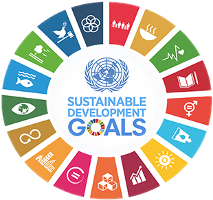
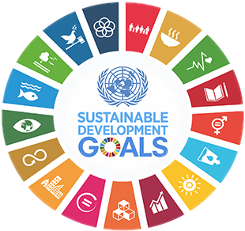

Tujuan Pembangunan Berkelanjutan (TPB), atau yang sering didengar oleh Sustainable Development Goals (SDGs) merupakan komitmen global dan nasional dalam mensejahterakan masyarakat dengan 17 tujuan dan sasaran global tahun 2030. 17 tujuan tersebut bersasaran untuk mengatasi berbagai tantangan global. 17 tujuan tersebut mencakup: (1) Tanpa Kemiskinan; (2) Tanpa Kelaparan; (3) Kehidupan Sehat dan Sejahtera; (4) Pendidikan Berkualitas; (5) Kesetaraan Gender; (6) Air Bersih dan Sanitasi layak; (7) Energi Bersih dan Terjangkau; (8) Pekerjaan Layak dan Pertumbuhan Ekonomi; (9) Industri, Inovasi dan Infrastruktur; (10) Berkurangnya Kesenjangan; (11) Kota dan Permukiman yang Berkelanjutan; (12) Konsumsi dan Produksi yang Bertanggung Jawab; (13) Penanganan Perubahan Iklim; (14) Ekosistem Lautan; (15) Ekosistem Daratan; (16) Perdamaian, Keadilan dan Kelembagaan yang Tangguh; (17) Kemitraan untuk Mencapai Tujuan.
Demi mengajak masyarakat untuk ikut berkontribusi dalam pembangunan ini, kementerian PPN/Bappenas menyelenggarakan kegiatan - kegiatan untuk menarik perhatian masyarakat. Ada Konferensi Tahunan SDGs Indonesia yang bertujuan sebagai platform partisipasi di Indonesia agar menyebarluaskan dan mendorong aksi nyata untuk mempercepat pencapaian SDGs. Terdapat juga Indonesia’s SDGs Action Award adalah ajang apresiasi kepada seluruh pemangku kepentingan yang telah mendukung pelaksanaan SDGs di Indonesia. Melalui penghargaan ini, diharapkan berbagai praktik baik dapat diikuti agar tersebar lebih luas dan mendorong percepatan target pencapaian.
SDGs memiliki hubungan yang kuat dengan kerja sama internasional. Dimulai dengan PBB merupakan salah satu organisasi kerja sama internasional yang juga menciptakan SDGs, tujuan SDGs tidak berbeda dengan tujuan kerja sama internasional. Tujuan SDGs yaitu untuk mensejahterakan masyarakat dan memebuhi kebutuhan seluruh dunia, dan tujuan kerja sama yaitu untuk memenuhi kebutuhan negara masing - masing dan perdamaian dunia yang juga didukung dengan mensejahterakan kehidupan masyarakat, dan keduanya juga hanya dapat dicapai melalui kolaborasi lintas negara.